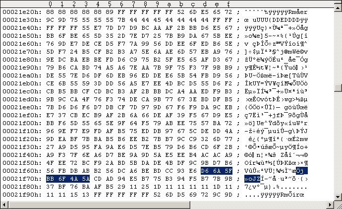
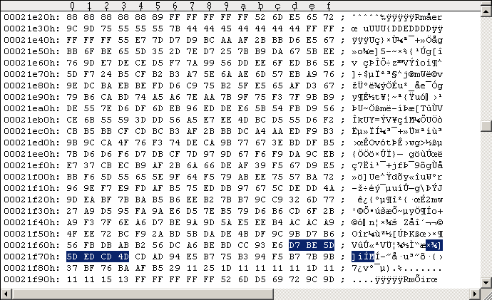

Main Index PatchesRapidLok2 patches: Disable the track 36 handlers and the key checks
In order to test remastered RapidLok2 disks it might be helpful having the Track 36 integrity checks and the key checks disabled. All other integrity checks remain active. After stepping the head to Track 36 we simply branch execution to the $052F File transfer management routine. See following code snippet. --- ORIGINAL CODE ------------------------------ 04E9: A9 24 LDA #$24 04EB: 20 EA 06 JSR $06EA ; move head from Track 34 to Track A=36, set Bit rate and init [$55]/[$59]. 04EE: A2 3B LDX #$3B Jump from $04F4: 04F0: 9D 75 04 STA $0475,X ; [$0476-$04B0]:=A=[$59], overwrite $0475/$049A/$04B9 routines 04F3: CA DEX 04F4: D0 FA BNE $04F0 04F6: 20 89 07 JSR $0789 ; Retrieve 35 keys from Track 36 Key Sector -> [$0200-$0221], integrity checks. CF=0 if all ok. 04F9: B0 BC BCS $04B7 ; branch if Track 36 integrity checks failed. Avoid this branch!!! ------------------------------------------------ --- PATCHED CODE ------------------------------- 04E9: A9 24 LDA #$24 04EB: 20 EA 06 JSR $06EA ; move head from Track 34 to Track A=36, set Bit rate and init [$55]/[$59]. 04EE: 4C 3A 05 JMP $053A ; Run file transfer management 04F1: 24 22 BIT $22 ; dummy, corrects sector checksum ------------------------------------------------ The calculation is as follows. The 5 bytes we change ($04EE-$04F1) have the following "parity" (the decrypted bytes are used for this here): original: $A2 xor $3B xor $9D xor $75 xor $04 = $75 patched: $4C xor $3A xor $05 xor $24 xor $.. = $57 Hence $75 xor $57 = $22 is to be used for correcting the sector parity. As all RapidLok routines are encrypted on disk we have to encrypt our patches before we apply them to the G64 images. This happens as usual. --- ORIGINAL DECRYPTION --------------------------------------- 04EE = |30 1E D6 E2 2A| xor |92 25 4B 97 2E| = |A2 3B 9D 75 04| --------------------------------------------------------------- --- MANIPULATED DECRYPTION ------------------------------------ 04EE = |DE 1F 4E B3 0C| xor |92 25 4B 97 2E| = |4C 3A 05 24 22| --------------------------------------------------------------- The $04xx buffer is read by the $0300-B routine: Job #1, Track 18 Sector 9. Note on RapidLok address restrictions: There is no problem with the above patch addresses. Applying the patch to the G64 image I always use the Maverick v5.04 GCR Editor (in WinVice) to "edit" the G64 images. Please refer to the RL6 handbook for instructions. Don't save your modifications to disk/G64 from within the GCR Editor! Use "UltraEdit" in hex-mode instead to apply the changes directly to the G64 images (GCR code). The following Figure #1 shows the original Track 18 Sector 9 of a RapidLok2 G64 image, Figure #2 shows the modifications.
Figure #1: Original Track 18 Sector 9 of a RapidLok2 disk (PAL).
Figure #2: Patched Track 18 Sector 9 ($04EE-$04F1 patches).Remastering example Use "nibwrite -S18 -E18 patched.g64" to remaster the patched Track 18 at about 300rpm. Watch nibwrite's console log, don't let it truncate track data.